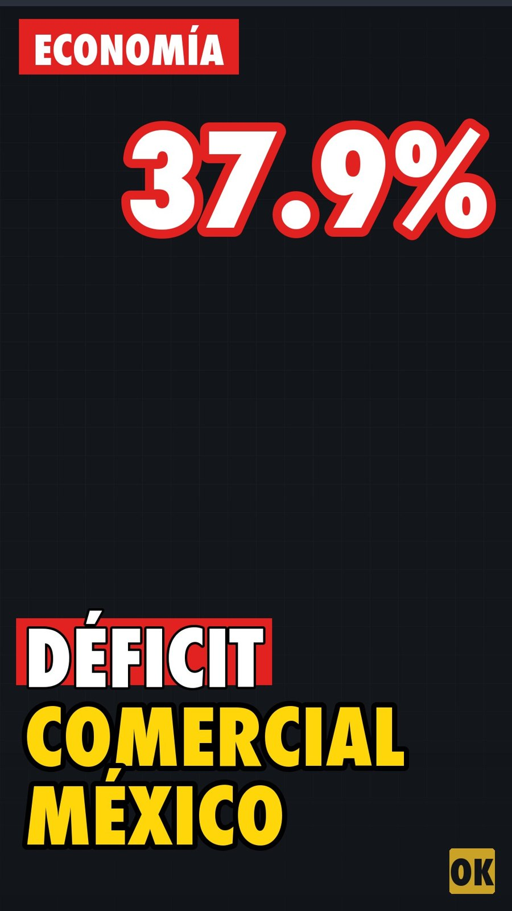
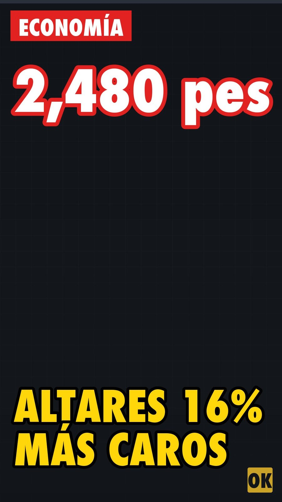

OKpolítico
OKpolíticoFinanzas
En vivo: Banco Central Europeo y Binance. Tablero completo →
Bolsa Mexicana de Valores · IPC
5 que más ganan
5 que más pierden
Variación de la última sesión de emisoras del IPC. Precios de la BMV vía Yahoo Finance, actualizado 31/10/2026 10:41. No es recomendación de inversión.
Sindicato denuncia despidos en Mars y Pedigree, acude al T-MEC
El sindicato SNAC denuncia despidos e intimidación en Mars y Pedigree México y anuncia que presentará reclamos bajo el T-MEC. El STPS asegura que revisará los casos, mientras la CN
30 de octubre de 2026Paquete Económico 2027 mantiene crecimiento moderado en México
El Paquete Económico 2027 proyecta un crecimiento del PIB de entre 1.5% y 2.5%, manteniéndose en un nivel moderado. Analistas, calificadoras y cámaras empresariales debaten sobre l
29 de octubre de 2026
Exportaciones e importaciones crecen en septiembre pese a déficit comercial
En septiembre de 2026, las exportaciones de México aumentaron 37.9% anual y las importaciones 33.1%, arrojando un déficit mensual de 606 millones de dólares, según datos del Inegi.
28 de octubre de 2026
Festividades de Día de Muertos y Halloween suben 16 por ciento por inflación
El costo de celebrar el Día de Muertos y Halloween aumentó un 16 por ciento debido a la inflación, según un sondeo de la Alianza Nacional de Pequeños Comerciantes. Conoce los detal
27 de octubre de 2026UIF congela cuentas a exaspirante político tras contratos millonarios con Pemex
La UIF congeló las cuentas de Gerardo Sánchez Zumaya, exaspirante del PT a la gubernatura de San Luis Potosí, tras señalamientos por facturaciones de 2,800 millones de pesos con Pe
26 de octubre de 2026
IMSS modifica reglas de cotización en la Modalidad 40
El Instituto Mexicano del Seguro Social ajustó los criterios de incorporación a la Modalidad 40 mediante acuerdo de su Consejo Técnico. La medida frena pagos retroactivos y fije lí
23 de octubre de 2026
FGR confirma que 59 millones de litros de combustible asegurados son legales
El Gobierno federal confirmó que los 59 millones de litros de combustible asegurados en Guanajuato a Grupo Simsa son de procedencia legal. Aunque se destituyó al delegado de la FGR
22 de octubre de 2026
Senado aprueba Ley de pagos digitales entre alertas por alzas de precios
El Senado de la República avaló la Ley de Economía Digital para promover cobros electrónicos en el país. Mientras legisladores de la mayoría afirman que impulsará la inclusión fina
21 de octubre de 2026
Sheinbaum confirma peticiones de Trump sobre gas de EU y participación en Pemex
La presidenta Claudia Sheinbaum informó que Donald Trump planteó aumentar la compra de gas estadounidense y la participación en Pemex. Aunque el gobierno federal proyecta reducir l
20 de octubre de 2026
Anuncian tres parques industriales en Tultepec con inversión de mil 100 mdp
El Gobierno del Estado de México anunció la llegada de tres parques industriales a Tultepec a cargo de Chesisa, con inversión de mil 100 mdp y proyección de cinco mil empleos. Aunq
19 de octubre de 2026
HR Ratings reduce calificación global de Pemex tras ajustar la deuda soberana de México
HR Ratings ajustó a la baja la calificación global de Pemex tras recortar la nota soberana de México a HR BBB(G). La Secretaría de Hacienda defendió la consolidación fiscal del paí
16 de octubre de 2026
Trabajadores del IMSS marchan en CDMX por falta de insumos y salarios
Trabajadores del IMSS marcharon en la Ciudad de México para exigir un aumento salarial del 10% y denunciar desabasto en clínicas. Mientras la dirección afirma un abasto superior al
14 de octubre de 2026
Destraban 21 proyectos por 3 mil 750 millones de dólares para reactivar economía
El CCE y el Gobierno federal reportaron el destrabe de 21 proyectos por 3,750 millones de dólares. Sin embargo, datos del INEGI reflejan que hasta marzo la inversión fija bruta lig
13 de octubre de 2026
El IMSS registra un récord histórico de 22.9 millones de empleos formales
El Instituto Mexicano del Seguro Social registró 22.9 millones de empleos formales en septiembre de 2026, un máximo histórico. Aunque se crearon 128 mil plazas en el mes, el salari
9 de octubre de 2026
Hacienda presume recaudación récord del SAT sin reforma fiscal
Seguimiento económico: La Secretaría de Hacienda reportó un incremento en la recaudación del SAT sin reforma fiscal, mientras la oposición recrimina el aumento de la deuda pública.
7 de octubre de 2026